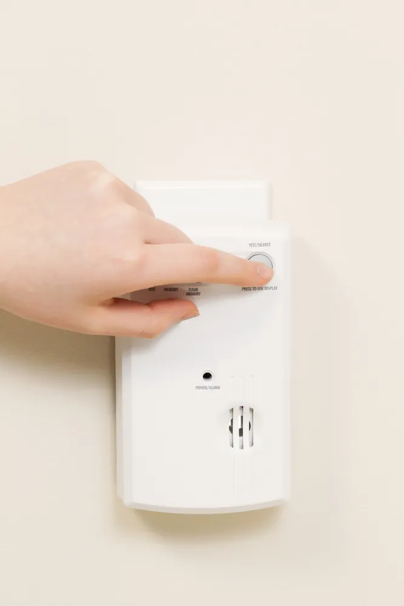

Signs and Symptoms of Carbon Monoxide Poisoning

Carbon monoxide, a colorless, odorless, and tasteless gas, is often called “the silent killer,” as these properties make it hard to detect. It is produced by the burning of gas, wood, propane, charcoal, or other types of fuel via combustion engines, appliances, or heating systems. While such sources are not usually a concern, if a car is left running in an enclosed space or an appliance or heating system malfunctions or is used improperly, the buildup of carbon monoxide may reach toxic levels, causing poisoning in those who are nearby.
According to WebMD , when a person breathes in too much of the gas, “it replaces the oxygen in your blood. Without oxygen, cells throughout the body die, and the organs stop working.” In the United States alone, carbon monoxide poisoning kills more than 400 people each year , so it’s important to be mindful of the signs and symptoms of carbon monoxide poisoning in order to seek medical attention right away.
1. Dull Headache
According to the NHS , the most common early warning sign of mild carbon monoxide poisoning is “a tension-type headache.” ASecureLife.com says that past victims often describe it as “a continuous headache that sits at the front of the head and generates a dull pain.”
Headaches are all too easy to dismiss, so it’s important to be mindful of whether they occur in a consistent setting, such as in your home, vehicle, or at work. You may also notice that they tend to dissipate quickly after leaving the location where the carbon monoxide gas leak is occurring.
2. Muscle Weakness
As the carbon monoxide replaces oxygen in the blood, causing cells to die, muscle weakness can occur. This may make regular activities, such as walking, far more challenging. Muscle weakness tends to occur in the beginning or if the exposure to carbon monoxide is low. You might also feel dizzy, which we will get to next.
3. Dizziness
Dizziness is another common early warning sign of carbon monoxide poisoning. It can also cause mental fogginess or even confusion. In severe cases, if enough carbon monoxide is inhaled, it may result in loss of consciousness (fainting).
4. Nausea and Vomiting
The early warning signs of mild carbon monoxide poisoning will often resemble symptoms associated with the flu, such as nausea, vomiting, and fatigue. “In residential circumstances where carbon monoxide problems slowly develop, victims may mistake their symptoms for the flu,” says CNN .
Unlike the flu, however, the NHS says that “carbon monoxide poisoning doesn’t cause a high temperature (fever).” If multiple people in a household are experiencing these symptoms, or they’re experienced in conjunction with others noted in this article, it may be cause for concern.
5. Shortness of Breath
As carbon monoxide builds up in the blood, symptoms may get considerably more severe. Shortness of breath or rapid breathing is one such indicator. Special attention should be paid to this symptom, especially if it is affecting numerous people within a household.
Along with shortness of breath, a person with carbon monoxide poisoning may also feel tightening or pain in the chest area. Such chest pain may also be accompanied by tachycardia, which is “a heart rate of more than 100 beats per minute,” says the NHS.
6. Confusion
As the carbon monoxide levels become higher and higher and develop more rapidly, mental confusion will set in.
A person’s ability to think clearly may also be impacted by the buildup of carbon monoxide , leading to confusion, impaired judgement, memory problems and, in some cases, hallucinations.
7. Drowsiness
Carbon monoxide poisoning may also cause a person to feel drowsy. Although CarbonMonoxideKills.com says that people often dismiss this symptom as non-concerning, causing them to “go to sleep and continue to breathe the carbon monoxide until severe poisoning or death occurs.”
8. Blurred Vision
As a lack of necessary oxygen affects the brain, blurred vision is another symptom to keep in mind. WebMD notes that this symptom is less common and typically only occurs in severe cases “as carbon monoxide builds up in your blood.”
If you experience vision issues, especially in conjunction with any other symptoms on this list, be sure to seek medical attention immediately.
9. Seizures
In severe cases, carbon monoxide poisoning may cause a person to experience a seizure, which the NHS defines as “an uncontrollable burst of electrical activity in the brain that causes muscle spasms.”
Because seizures generally only occur in near-fatal circumstances, medical attention should be sought immediately. But unfortunately, the poisoning may be past the point of recovery. If the levels of carbon monoxide exposure are extremely high, it can also cause “convulsions, coma and death,” says Health Canada .
10. Loss of Consciousness
A person who has been exposed to carbon monoxide for too long might pass out and lose consciousness. This has been known to happen when someone is exposed to carbon monoxide while sleeping or if they are already passed out. In these situation, the biggest danger is that it can be fatal. “If you breathe in large amounts of CO [carbon monoxide], your body will begin to replace the oxygen in your blood with CO. When this occurs, you can become unconscious. Death may occur in these cases,” writes Healthline .
UPMC Health Beat warns that people should always be aware when they are near equipment that is burning fuel or fire and stay up to date on how their furnace is running in the winter.
11. Chest Pain
The UPMC Health Beat also contests that chest pain is one of many symptoms of carbon monoxide poisoning. This is more common at higher levels or prolonged exposure. “Prolonged exposure to carbon monoxide levels of about 1 to 70 parts per million usually doesn’t result in symptoms, although some heart patients may feel increased chest pain, according to the Consumer Product Safety Commission ,” writes CNN.
Hopefully, the carbon monoxide poisoning is discovered before this happens, but if it isn’t discovered in time, it can cause chest pain, feeling tired or dizzy, and trouble thinking, says CBC News .
12. When to See a Doctor
Carbon monoxide poisoning is extremely dangerous and can be life-threatening. It should not be taken lightly. If you suspect you or someone you know has be exposed to carbon monoxide, you need to take them to the hospital immediately. Even if that person isn’t exhibiting any of the symptoms we just discussed in this article, they should be checked out by a healthcare professional just to be sure, warns Healthline.
Source: https://activebeat.com/your-health/7-signs-of-carbon-monoxide-poisoning/